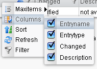

General Using Information

Topic content
In the upper part of the screen, the desired view can be chosen:
•Default: scenario specific entries are shown after the selection of a scenario (local scenario choice)
•Scenario: scenario specific entries are shown directly (global scenario choice)
In general, left clicks are used for moving through the menus and right clicks open context menus at certain points.
Table settings
The header of each table provides a context menu for adapting the table by right clicking on it.
The following options are provided here:
•Edit the number of shown entries in one table page
•Select the columns shown in the table

•Select the sorting criteria of a column (ascending or descending)
•Actualize the table entries (manually or automatically). The refresh interval can be configured under GUI Settings ( GUI Settings )
•Filtering criteria
You can work with wildcards (*) within the filtering criteria. The filtering of a status code from certain tables is done with defined expressions. Here is a list of the affected tables and their expressions:
•Scenario: true = aktiv / false = inaktiv
•Adapter: 0 = stopped, 1 = started, 2 = undefined
•Process monitoring: 2 = running, 3 = finished, 9 = error, 10 = warning
•Runtime: 0 = stopped, 1 = started
•System events: (Type): 0 = info, 1 = warning, 2 = error
•Timer: true = stopped, false = started
Additionally, some tables provide special functions that can be shown via right clicking in the table body:
•Scenario
•User management
•Timer
•Process monitoring
•Channel
•System Events
•Runtime
More information about the tables can be found in the corresponding sections.